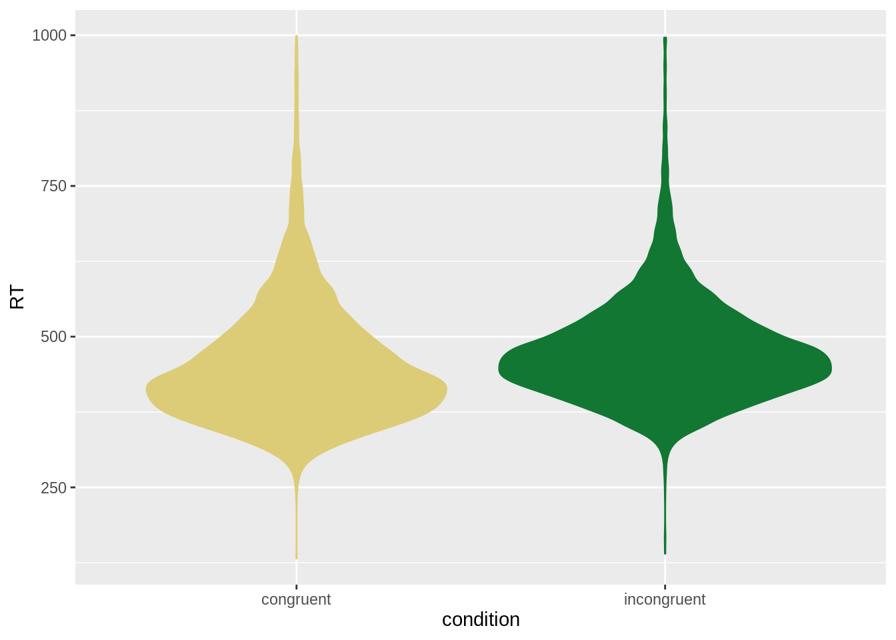

For \(\xi_i = \beta_0 + \beta_1 x_i\), let \(x_i =0\) if the data point is from groupA and \(x_i=1\) if it’s from groupB. Then the mean of groupA is computed by the intercept \(\mu_A = \beta_0\) and the mean of groupB is computed as the sum of the intercept and the slope \(\mu_B = \beta_0 + \beta_1\). Since \(\mu_A = 1\) and \(\mu_B = 10\), we can guess that \(\beta_0 = 1\) and \(\beta_1 = 10 - 1 = 9\).
14.1 Single two-level predictor
Let’s revisit the data from the Simon task. Just like in chapter 11, we will be looking at the hypothesis that, among all correct responses, the mean reaction times for the congruent condition are lower than those of the incongruent condition.
# extract just the currently relevant columns
# from the data set
data_ST_excerpt <- aida::data_ST %>%
filter(correctness == "correct") %>%
select(RT, condition)
# show the first couple of lines
head(data_ST_excerpt, 5)## # A tibble: 5 × 2
## RT condition
## <dbl> <chr>
## 1 735 incongruent
## 2 557 incongruent
## 3 455 congruent
## 4 376 congruent
## 5 626 incongruentNotice that this tibble contains the data in a tidy format, i.e., each row contains a pair of associated measurements.
We want to explain or predict the variable RT in terms of the variable condition.
The variable RT is a metric measurement.
But the variable condition is categorical variable with two category levels.
Before we head on, let’s look at the data (again). Here’s a visualization of the distribution of RTs in each condition:
data_ST_excerpt %>%
ggplot(aes(x = condition, y = RT, color = condition, fill = condition)) +
geom_violin() +
theme(legend.position = "none")
The means for both conditions are:
## # A tibble: 2 × 2
## condition mean_RT
## <chr> <dbl>
## 1 congruent 453.
## 2 incongruent 477.The difference between the means of conditions is:
data_ST_excerpt %>% filter(condition == "incongruent") %>% pull(RT) %>% mean() -
data_ST_excerpt %>% filter(condition == "congruent") %>% pull(RT) %>% mean()## [1] 23.63348While numerically this difference seems high, the question remains whether this difference is, say, big enough to earn our trust.
We address this question here using posterior inference based on a regression model.
Notice that we simply use the same formula syntax as before: we want a model that explains RT in terms of condition.
##
## SAMPLING FOR MODEL 'd64f4a1496f2c36fcffdfcafc9527127' NOW (CHAIN 1).
## Chain 1:
## Chain 1: Gradient evaluation took 6.5e-05 seconds
## Chain 1: 1000 transitions using 10 leapfrog steps per transition would take 0.65 seconds.
## Chain 1: Adjust your expectations accordingly!
## Chain 1:
## Chain 1:
## Chain 1: Iteration: 1 / 2000 [ 0%] (Warmup)
## Chain 1: Iteration: 200 / 2000 [ 10%] (Warmup)
## Chain 1: Iteration: 400 / 2000 [ 20%] (Warmup)
## Chain 1: Iteration: 600 / 2000 [ 30%] (Warmup)
## Chain 1: Iteration: 800 / 2000 [ 40%] (Warmup)
## Chain 1: Iteration: 1000 / 2000 [ 50%] (Warmup)
## Chain 1: Iteration: 1001 / 2000 [ 50%] (Sampling)
## Chain 1: Iteration: 1200 / 2000 [ 60%] (Sampling)
## Chain 1: Iteration: 1400 / 2000 [ 70%] (Sampling)
## Chain 1: Iteration: 1600 / 2000 [ 80%] (Sampling)
## Chain 1: Iteration: 1800 / 2000 [ 90%] (Sampling)
## Chain 1: Iteration: 2000 / 2000 [100%] (Sampling)
## Chain 1:
## Chain 1: Elapsed Time: 1.62174 seconds (Warm-up)
## Chain 1: 0.29337 seconds (Sampling)
## Chain 1: 1.91511 seconds (Total)
## Chain 1:
##
## SAMPLING FOR MODEL 'd64f4a1496f2c36fcffdfcafc9527127' NOW (CHAIN 2).
## Chain 2:
## Chain 2: Gradient evaluation took 6.5e-05 seconds
## Chain 2: 1000 transitions using 10 leapfrog steps per transition would take 0.65 seconds.
## Chain 2: Adjust your expectations accordingly!
## Chain 2:
## Chain 2:
## Chain 2: Iteration: 1 / 2000 [ 0%] (Warmup)
## Chain 2: Iteration: 200 / 2000 [ 10%] (Warmup)
## Chain 2: Iteration: 400 / 2000 [ 20%] (Warmup)
## Chain 2: Iteration: 600 / 2000 [ 30%] (Warmup)
## Chain 2: Iteration: 800 / 2000 [ 40%] (Warmup)
## Chain 2: Iteration: 1000 / 2000 [ 50%] (Warmup)
## Chain 2: Iteration: 1001 / 2000 [ 50%] (Sampling)
## Chain 2: Iteration: 1200 / 2000 [ 60%] (Sampling)
## Chain 2: Iteration: 1400 / 2000 [ 70%] (Sampling)
## Chain 2: Iteration: 1600 / 2000 [ 80%] (Sampling)
## Chain 2: Iteration: 1800 / 2000 [ 90%] (Sampling)
## Chain 2: Iteration: 2000 / 2000 [100%] (Sampling)
## Chain 2:
## Chain 2: Elapsed Time: 1.35469 seconds (Warm-up)
## Chain 2: 0.333529 seconds (Sampling)
## Chain 2: 1.68822 seconds (Total)
## Chain 2:
##
## SAMPLING FOR MODEL 'd64f4a1496f2c36fcffdfcafc9527127' NOW (CHAIN 3).
## Chain 3:
## Chain 3: Gradient evaluation took 6.4e-05 seconds
## Chain 3: 1000 transitions using 10 leapfrog steps per transition would take 0.64 seconds.
## Chain 3: Adjust your expectations accordingly!
## Chain 3:
## Chain 3:
## Chain 3: Iteration: 1 / 2000 [ 0%] (Warmup)
## Chain 3: Iteration: 200 / 2000 [ 10%] (Warmup)
## Chain 3: Iteration: 400 / 2000 [ 20%] (Warmup)
## Chain 3: Iteration: 600 / 2000 [ 30%] (Warmup)
## Chain 3: Iteration: 800 / 2000 [ 40%] (Warmup)
## Chain 3: Iteration: 1000 / 2000 [ 50%] (Warmup)
## Chain 3: Iteration: 1001 / 2000 [ 50%] (Sampling)
## Chain 3: Iteration: 1200 / 2000 [ 60%] (Sampling)
## Chain 3: Iteration: 1400 / 2000 [ 70%] (Sampling)
## Chain 3: Iteration: 1600 / 2000 [ 80%] (Sampling)
## Chain 3: Iteration: 1800 / 2000 [ 90%] (Sampling)
## Chain 3: Iteration: 2000 / 2000 [100%] (Sampling)
## Chain 3:
## Chain 3: Elapsed Time: 0.71913 seconds (Warm-up)
## Chain 3: 0.325411 seconds (Sampling)
## Chain 3: 1.04454 seconds (Total)
## Chain 3:
##
## SAMPLING FOR MODEL 'd64f4a1496f2c36fcffdfcafc9527127' NOW (CHAIN 4).
## Chain 4:
## Chain 4: Gradient evaluation took 6.5e-05 seconds
## Chain 4: 1000 transitions using 10 leapfrog steps per transition would take 0.65 seconds.
## Chain 4: Adjust your expectations accordingly!
## Chain 4:
## Chain 4:
## Chain 4: Iteration: 1 / 2000 [ 0%] (Warmup)
## Chain 4: Iteration: 200 / 2000 [ 10%] (Warmup)
## Chain 4: Iteration: 400 / 2000 [ 20%] (Warmup)
## Chain 4: Iteration: 600 / 2000 [ 30%] (Warmup)
## Chain 4: Iteration: 800 / 2000 [ 40%] (Warmup)
## Chain 4: Iteration: 1000 / 2000 [ 50%] (Warmup)
## Chain 4: Iteration: 1001 / 2000 [ 50%] (Sampling)
## Chain 4: Iteration: 1200 / 2000 [ 60%] (Sampling)
## Chain 4: Iteration: 1400 / 2000 [ 70%] (Sampling)
## Chain 4: Iteration: 1600 / 2000 [ 80%] (Sampling)
## Chain 4: Iteration: 1800 / 2000 [ 90%] (Sampling)
## Chain 4: Iteration: 2000 / 2000 [100%] (Sampling)
## Chain 4:
## Chain 4: Elapsed Time: 1.95412 seconds (Warm-up)
## Chain 4: 0.32279 seconds (Sampling)
## Chain 4: 2.27691 seconds (Total)
## Chain 4:Let’s inspect the summary information for the posterior samples, which we do here using the summary function for the brms_fit object from which we extract information only about the fixed effects, showing the mean (here called “Estimate”) and indicators of the lower and upper 95% inner quantile.
## l-95% CI Estimate u-95% CI
## Intercept 451.10002 452.90489 454.73226
## conditionincongruent 21.01228 23.61686 26.25365We see that the model inferred a value for an “Intercept” variable and for another variable called “conditionincongruent”.
What are these?
If you look back at the empirically inferred means, you will see that the mean estimate for “Intercept” corresponds to the mean of RTs in the “congruent” condition and that the mean estimate for the variable “conditionincongruent” closely matches the computed difference between the means of the two conditions.
And, indeed, that is what this regression model is doing for us.
Using a uniform formula syntax, brms has set up a regression model in which a predictor, given as a character (string) column, was internally coerced somehow into a format that produced an estimate for the mean of one condition and an estimate for the difference between conditions.
How do these results come about?
And why are the variables returned by brms called “Intercept” and “conditionincongruent”?
In order to use the simple linear regression model, the categorical predictor \(x\) has been coded as either \(0\) or \(1\).
Concretely, brms has introduced a new predictor variable, call it new_predictor, which has value \(0\) for the “congruent” condition and \(1\) for the “incongruent” condition.
By default, brms chooses the level that is alphanumerically first as the so-called reference level, assigning to it the value \(0\).
Here, that’s “congruent”.
The result would look like this:
## # A tibble: 5 × 3
## RT condition new_predictor
## <dbl> <chr> <dbl>
## 1 735 incongruent 1
## 2 557 incongruent 1
## 3 455 congruent 0
## 4 376 congruent 0
## 5 626 incongruent 1Now, with this new numeric coding of the predictor, we can calculate the linear regression model as usual:
\[ \begin{aligned} \xi_i & = \beta_0 + \beta_1 x_i & y_i & \sim \text{Normal}(\mu = \xi_i, \sigma) \end{aligned} \]
As a consequence, the linear model’s intercept parameter \(\beta_0\) can be interpreted as the predicted mean of the reference level: if for some \(i\) we have \(x_i = 0\), then the predictor \(\xi_i\) will just be \(\xi_i = \beta_0\); whence that the intercept \(\beta_0\) will be fitted to the mean of the reference level if for some \(i\) we have \(x_i = 1\) instead, the predicted value will be computed as \(\xi_i = \beta_0 + \beta_1\), so that the slope term \(\beta_1\) will effectively play the role of the difference \(\delta\) between the mean of the groups. The upshot is that we can conceive of a \(t\)-test as a special case of a linear regression model!
Schematically, we can represent this coding scheme for coefficients like so:
## # A tibble: 2 × 3
## condition x_0 x_1
## <chr> <dbl> <dbl>
## 1 congruent 1 0
## 2 incongruent 1 1Exercise 14.1 For the given data below, compute (or guess) the MLEs of the regression coefficients. Choose the appropriate 0/1 encoding of group information. We have two groups, and three measurements of \(y\) for each:
groupA: (1,0,2) and groupB: (10,13,7)